Panel por empresa y bodega
Indicadores de stock, solicitudes pendientes, contenedores por vencer, movimientos del día y alertas de la bodega seleccionada, con cambio rápido de empresa y bodega.
Controla la bodega de materiales, la bodega de residuos peligrosos y la de sustancias peligrosas de cada empresa y faena. Con plazos de almacenamiento, compatibilidades, trazabilidad por contenedor y lote, compras con aprobación y etiquetas Zebra.
gestionbodegas.integralflex.clParte de IntegralFlex Suites
RespelCore es el sistema de bodegas e inventarios de IntegralFlex Suites. Es multiempresa y multibodega: cada usuario elige la empresa y la bodega con la que trabaja, y ve solo sus datos. La bodega general cubre solicitudes, preparación y entrega con firma, préstamo de herramientas, lotes y vencimientos, kardex, conteos cíclicos, ubicaciones, pallets, patio y muelles, y compras con órdenes de compra.
El módulo RESPEL ordena la bodega de residuos peligrosos según el D.S. 148. Registra los perfiles de residuo, la generación y cada contenedor que ingresa, con su fecha límite de almacenamiento y aviso 30 días antes del vencimiento. Asigna sectores con compatibilidad documentada, registra inspecciones e incidentes, y programa retiros con transportistas y destinatarios autorizados. Prepara la información para declarar en SIDREP, sin reemplazarlo.
El módulo SUSPEL controla las sustancias peligrosas según el D.S. 43 y el Reglamento de Seguridad Minera. Mantiene el catálogo de sustancias con su hoja de datos de seguridad (HDS), clase, número ONU e incompatibilidades, el inventario por lote y contenedor en kilos con vencimiento, la habilitación de la bodega y los sectores con su capacidad. Todo queda registrado en la auditoría del sistema.
Indicadores de stock, solicitudes pendientes, contenedores por vencer, movimientos del día y alertas de la bodega seleccionada, con cambio rápido de empresa y bodega.
Perfiles de residuo con característica de peligrosidad, generación por área y resumen de lo almacenado, retirado y por vencer en la bodega de residuos peligrosos.
Cada contenedor queda con residuo, cantidad, sector y fecha límite de almacenamiento. Aviso 30 días antes del vencimiento y alerta de plazos excedidos.
Sectores de la bodega con su capacidad, residuos permitidos y compatibilidad documentada, para no almacenar juntos residuos incompatibles.
Inspecciones periódicas de la bodega, registro de incidentes y aprobación de ingresos y salidas por el responsable.
Retiros programados de hasta 10 lotes con transportista y destinatario autorizados, destinos pendientes con resumen diario por correo y traslados entre bodegas.
Antecedentes de la bodega de sustancias peligrosas, habilitación, sectores con capacidad y conciliación del inventario.
Cada sustancia con su hoja de datos de seguridad, clase de peligro, número ONU e incompatibilidades, consultable desde la bodega.
Solicitudes de materiales y EPP, preparación por olas, entrega con firma del receptor y préstamo y devolución de herramientas y equipos.
Stock por SKU, talla, lote y ubicación, con fechas de vencimiento, kits, matriz de EPP por cargo y reposición por mínimos.
Kardex de cada movimiento, conteos cíclicos por clasificación ABC con aprobación independiente y valorización FIFO o costo promedio.
Mapa de ubicaciones, planificador de pallets, control de patio y asignación de muelles para recepciones y despachos.
Operación con lector de código de barras y etiquetas Zebra para productos, ubicaciones y contenedores, con administración de impresoras.
Órdenes de compra con política de aprobación por monto, consulta de OC en SAP, inspección de recepción, proveedores y facturas.
Personal de bodega y turnos, costos por centro de costo, servicios y liquidaciones de contratistas.
Vista consolidada de todas las bodegas de la empresa, indicadores de gestión e intercambio de datos entre empresas con archivos firmados SHA-256.
Reglas automáticas y avisos por correo con Resend, y carga masiva de productos, stock y maestros desde planillas.
Inicio de sesión con Microsoft 365, roles por empresa y bodega, guía por voz, modo oscuro y auditoría de cada movimiento.
Pantallas reales del sistema con datos de demostración: los nombres de personas, empresas y correos son ficticios.
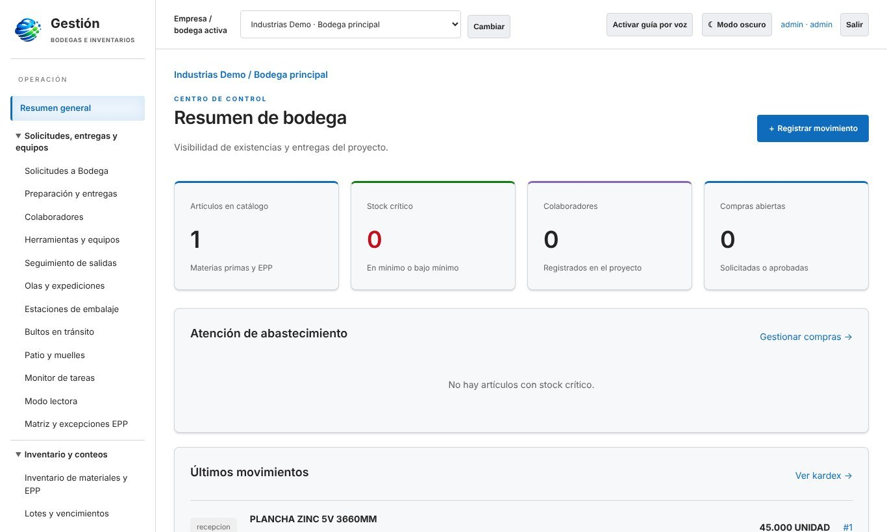
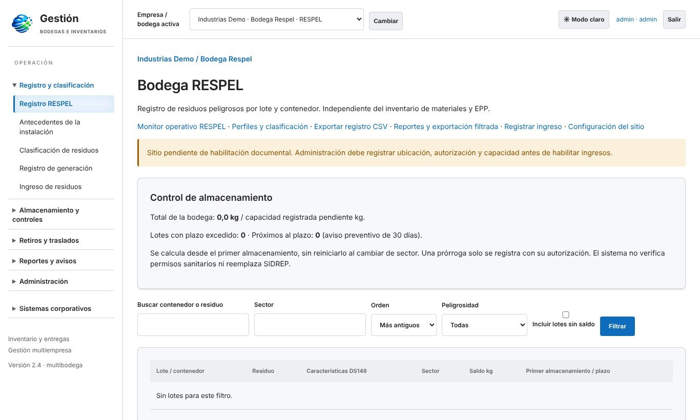
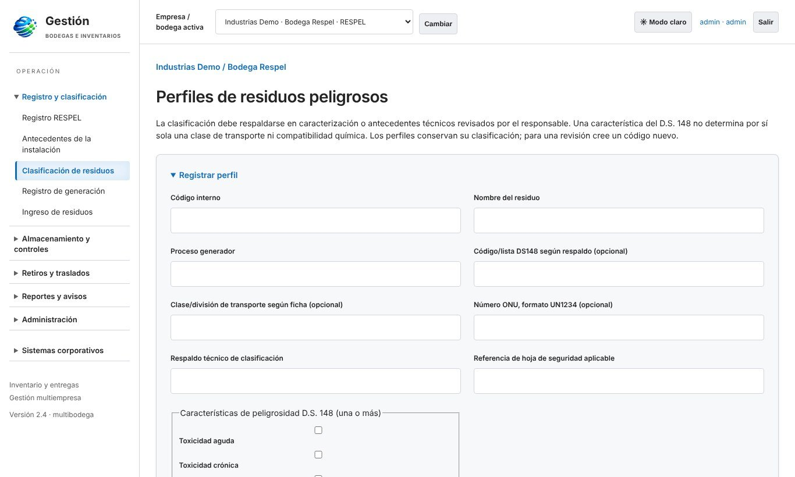
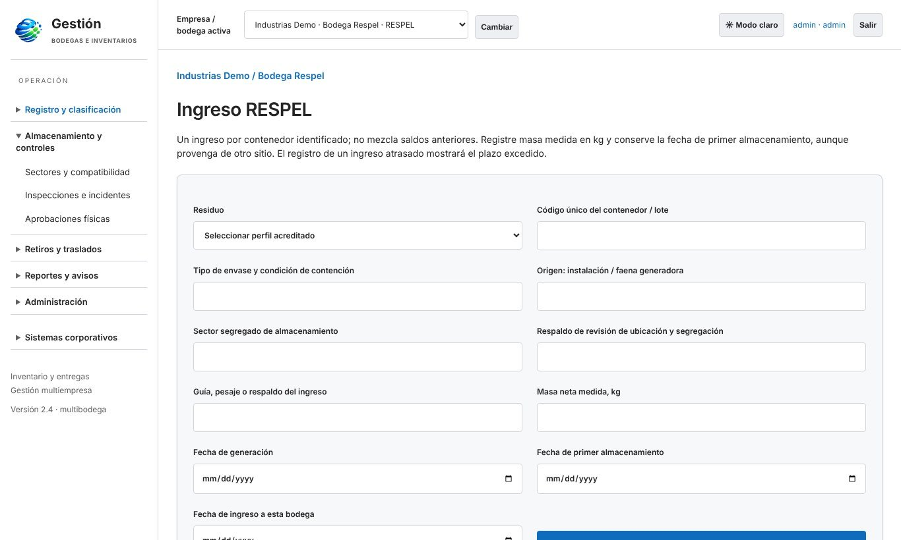
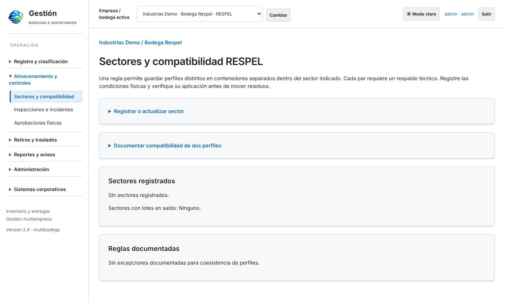
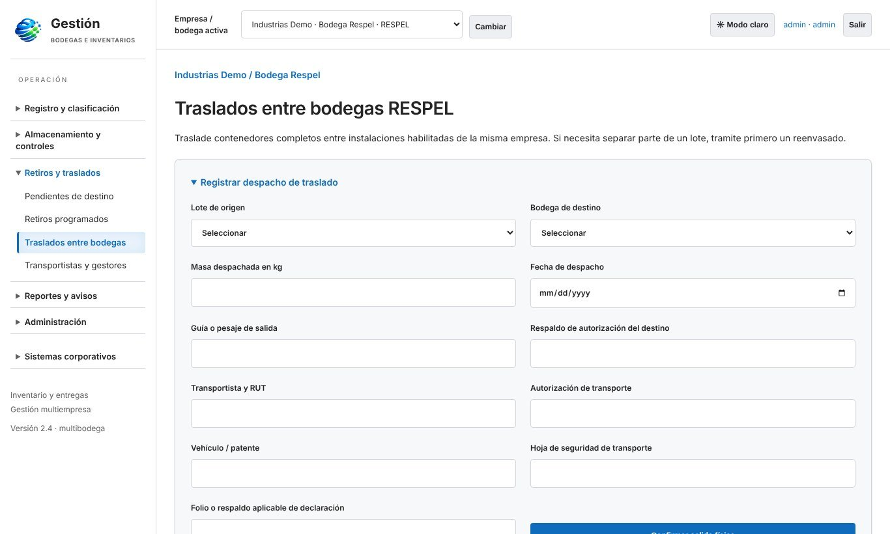
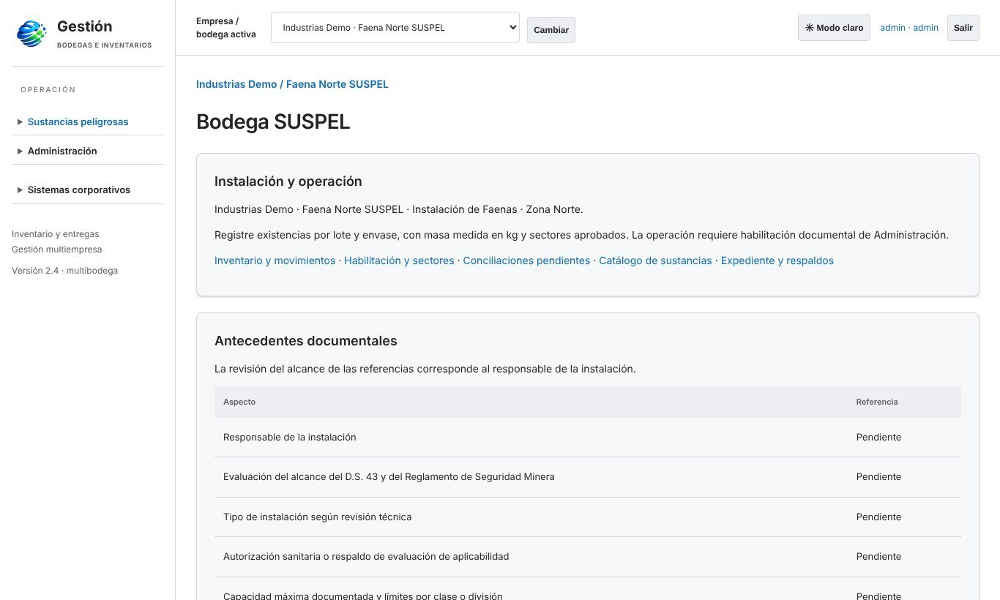
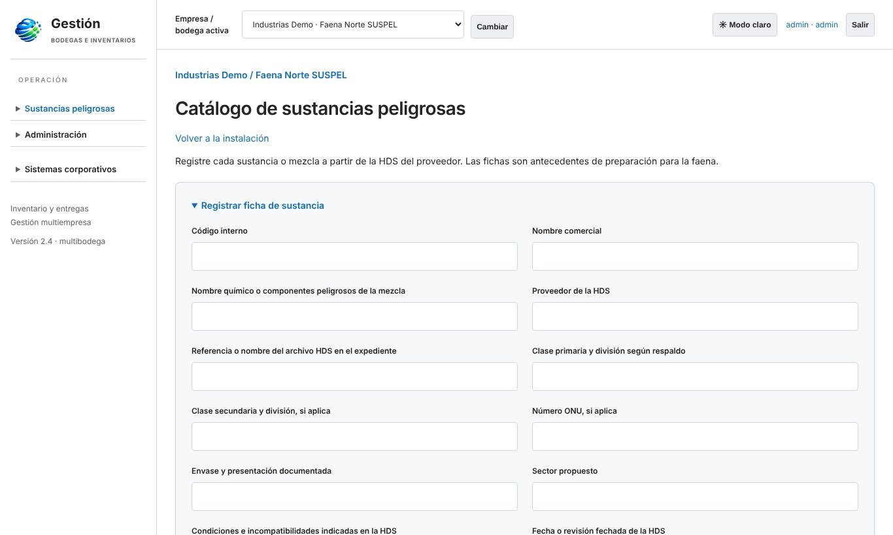
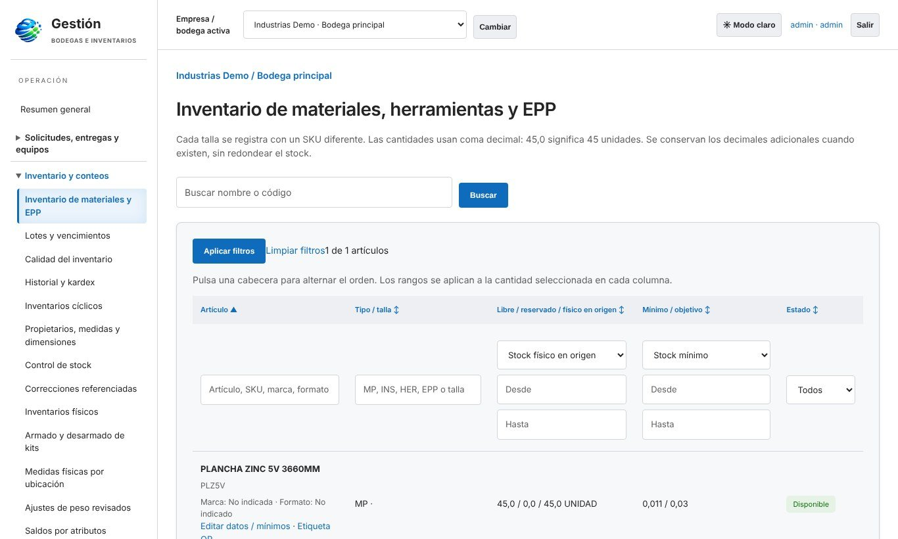
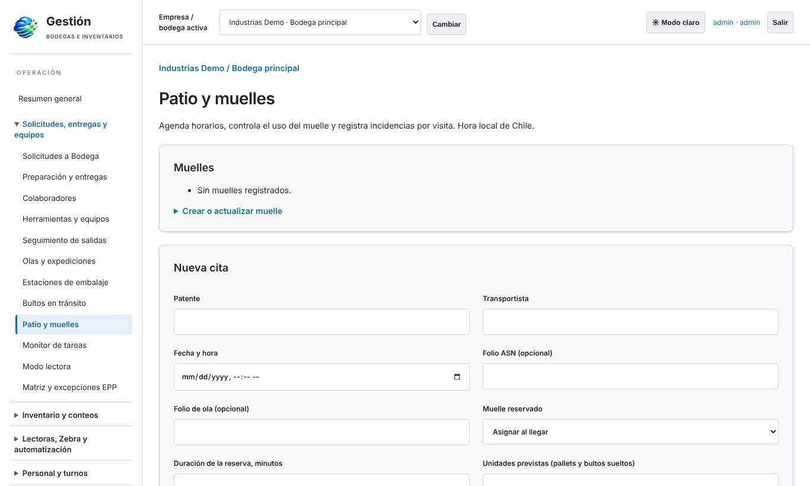
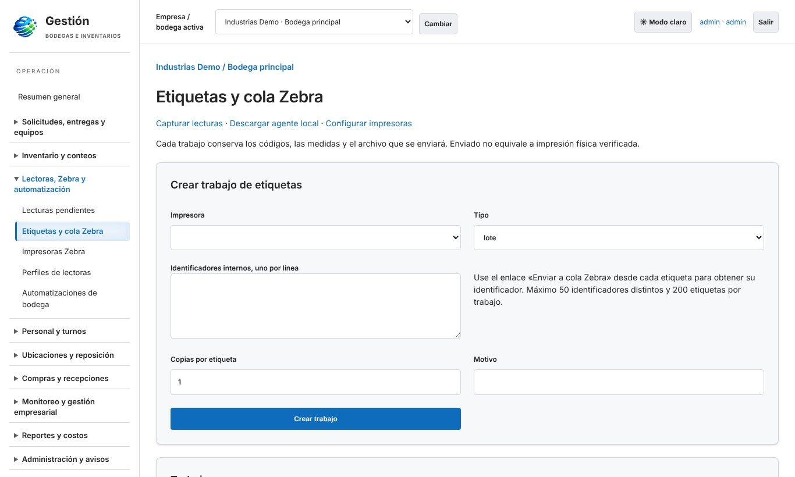
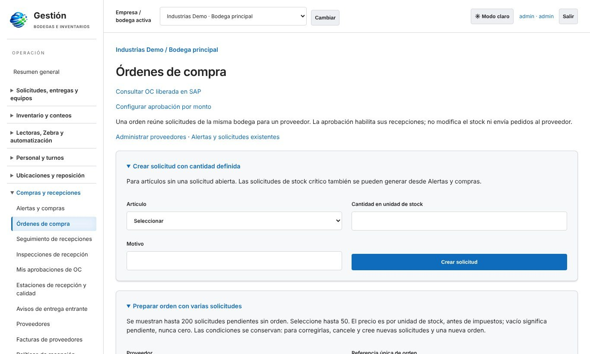
Define empresas, bodegas, sectores, sustancias, perfiles de residuo y usuarios por rol.
Ingresa materiales, sustancias y contenedores de residuos con lote, ubicación y etiqueta Zebra.
Sigue stock, vencimientos, plazos de almacenamiento, compatibilidades e inspecciones.
Entrega con firma, programa retiros con transportistas autorizados y traslada entre bodegas.
Kardex, conteos, indicadores y reportes CSV para la gestión y las declaraciones.
Flask + PostgreSQL, interfaz web responsiva con modo oscuro y guía por voz
Microsoft 365, Resend, consulta de OC en SAP e impresoras Zebra
RESPEL D.S. 148, SUSPEL D.S. 43 y Reglamento de Seguridad Minera
Roles por empresa y bodega, protección CSRF y CSP, y auditoría completa
Planes desde 0,5 UF por usuario al mes. Escríbenos y coordinamos una demo con tus datos.